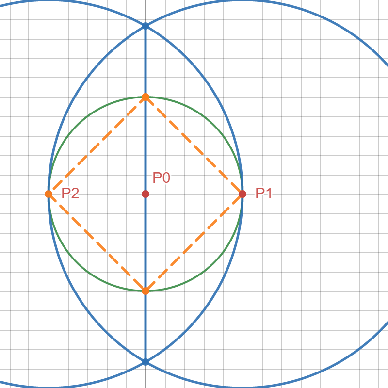
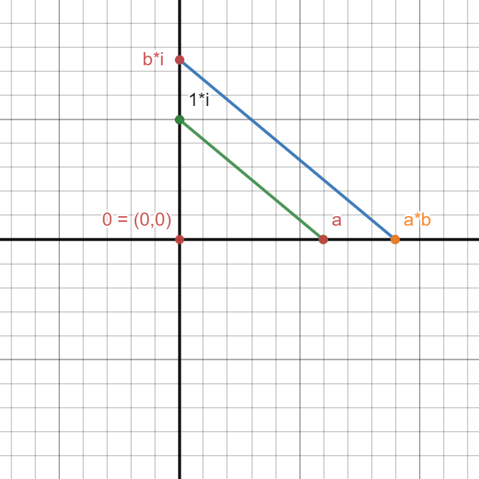
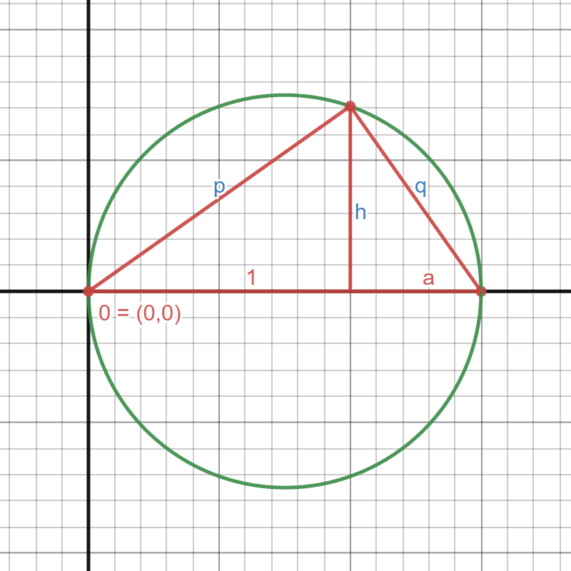

Let's say we start with two points, a ruler, and a compass. I.e. we can draw lines between any two points, and we can draw a circle around a point through a point.
What shapes can we make?
Let's say we are given the two red points. Just by playing around it is fairly easy to make a triangle.
It is also not too hard to construct a square. Let's say we are given \(P_0\) and \(P_1\).
We first construct the point \(P_2\) with the green circle.
Then we draw the two blue circles, and the line between their intersections (\(Q_1\) and \(Q_2\)) is the \(y\)-axis.
In particular this can be used to construct the perpendicular bisector.
The hexagon is slightly harder. We are again starting with \(P_0\) and \(P_1\)
We start with the green circle, and then draw a blue circle with midpoint \(P_1\) through \(P_0\).
This circle intersects the green one, and we draw a new circle around this intersection through the previous midpoint.
By keeping going like this we will eventually get all 6 corners.
The pentagon is the first harder shape to find.
And if you find it through playing around, can you be sure that it is actually a pentagon?
How would you even proof that?
By the end of this, I hope to show you how thinking algebraically about a geometric problem can help answer questions like this.
I will assume that you have a very basic familiarity with complex numbers, but nothing more.
This presentation is 2-dimensional. If a slide contains harder material I tried to make it more clear on the slides underneath it.
You can press down with the arrow keys or on the arrows on the bottom right corner.
Please try it out :)
Well done! Slides like this, that are underneath another slide contain more details or explanations. If something is unclear I hope this helps.
One of my favorite math quotes is my Michael Atiyah:
Algebra is the offer made by the devil to the mathematician. The devil says: "I will give you this powerful machine, it will answer any question you like. All you need to do is give me your soul: give up geometry and you will have this marvellous machine."
So today I will show you the power of the deal.
First of all we need to understand that the set of points we can construct form an algebraic structure.
We think of the plane as the complex numbers and I claim that if we have constructed any two points, then we can add and multiply them as complex numbers. (To be more precise it is a subfield)
To show this, it is enough to prove it for real numbers, i.e. points on the \(x\)-axis. This will make the pictures with the constructions less 'crowded' with shapes. (For more details on why this works click down.)
For arithmetic to even make sense we need to fix a frame of reference. We have seen from the construction of the square that we can draw a the coordinate axis. See the second helper slide for a more details.
Real numbers (denoted \(\mathbb{R}\)) are numbers as most people would understand them in everyday life. They can be positive or negative, whole numbers like \(1,2,-7\), fractions like \(\frac{1}{2}\) or more complicated things like \(\sqrt{2}\) or \(\pi\).
A complex number \(z\) consists of two parts, a real and imaginary part. You can think of the real part as the \(x\)-direction and of the imaginary part as the \(y\)-direction. That is why we can identify points on a plane with complex numbers.
Because we can easily 'rotate' every number by 90° (see for example how we constructed \(Q_1\) and \(Q_2\) for the square), we can construct the complex number \(a + bi\) from the two real numbers \(a\) and \(b\) with ruler and compass. And therefore it is enough to only consider basic arithmetic on the real number line.
This construction can also be seen on the next slide.
Remember: We always start with two points. We can just declare one of them to be defined as the origin, i.e. \((0,0)\) and the other one as \((0,1)\), and implicit in this is the definition of the \(x\)-axis. the definition of \(1\). In the picture above this is indicated by the black lines.
Let's say, from the two points we started with, we have constructed two additional arbitrary real numbers \(a\) and \(b\).
We can add them in the following way:
This time we start with \(b\) already on the \(y\)-axis. To construct the product of two arbitary real numbers \(a\) and \(b\) we:
Try to prove that this is the case. A solution is on the helper slides.
The line between \((0,1)\) and \((a,0)\) satisfies the equation \(y=-\frac{1}{a}x + 1\). To see this noe that we are going \(a\) units to the left and one unit down. That is where the \(-\frac{1}{a}\) comes from. The \(+1\) is because it intersects the \(y\)-axis in \(1\).
Now the parallel line has the same slope so its equation is \(y=-\frac1a x + b\). Solving this for zero gives \[\begin{align*} -\frac{1}{a} x + b &\overset{!}{=} 0\\ \frac{1}{a} x &= b\\ x &= ab \end{align*}\]
With everything we have done so far, you might want to try to figure out how to construct \(-a\) and \(\frac{1}{a}\) from \(a\).
Here are two hints:
Solutions are on the helper slides
If \(a=0\) then we are done. Assume \(a\neq 0\).
If \(a=1\) we are done. Assume \(a\neq 1\) and of course \(a\neq 0\).
To prove that this works consider:
The first line satisfies \(y=-\frac{1}{a}x + 1\). The new one has the same slope but an unkown intersection with the \(y\)-axis, let's call it \(b\). So the equation is \(y = -\frac{1}{a}x + b\). We know that at \(x=1\) the \(y\)-value is \(0\), so \(-\frac{1}{a}\cdot 1 + b = 0\). The result follows.
We take the square root of some positive number \(a\). We first draw a circle through the midpoint between \(0\) and \(1+a\) through the origin and \(1+a\). With this circle
\[(1+a)^2 = p^2 + q^2;\quad p^2 = 1^2 + h^2;\quad q^2 = a^2 + h^2\] Together they show \(h^2 = a\), so the length \(h\) is the desired square root of \(a\).
It might not seem like much and none of the constructions was super long or hard. However, these constructions are the bridge between the algebraic to the geometric world.
From now on, whenever we find a 'recipe' for a number that only involves addition and subtraciton, multiplication and division, and taking square roots, we can also construct it geometrically. And not only for the real numbers but the complex numbers as well.
This is the key for getting deeper understanding of geometric constructions.
We are finally at the point where we can reformulate the problem of finding a pentagon in an algebraic way.
Let's say we want one corner of the pentagon to be the complex number \(1\), and all the verteces should be on the unit circle. This means we have to find a complex number \(\zeta\) on the unit circle whose angle is \(\frac{360°}{5}\).
Remember: Multiplying two complex numbers means adding their angles and multiplying their lengths. But \(\zeta\) has length \(1\) since it is on the unit circle, so we just add the angles.
Arithmetically that means the verteces of the pentagon we try to construct are \(1,\zeta,\zeta^2,\zeta^3,\zeta^4\).
Complex numbers can be written, as \(r(\cos(\alpha) + i\sin(\alpha))\) for an angle \(\alpha\) and a length \(r\). We assume \(r=1\). Now if you have two numbers with two angles, \(\alpha\) and \(\beta\), you get
\[(\cos(\alpha) + i\sin(\alpha))\cdot(\cos(\beta) + i\sin(\beta)) = \cos(\alpha)\cos(\beta) - \sin(\alpha) \sin(\beta) + i(\cos(\alpha)\sin(\beta) + \sin(\alpha) \cos(\beta))\]
Now you can check Wikipedia to convince yourself that
\[\begin{align*} \cos(\alpha)\cos(\beta) - \sin(\alpha) \sin(\beta) &= \cos(\alpha + \beta) \text{ and }\\ \cos(\alpha)\sin(\beta) + \sin(\alpha) \cos(\beta) &= \sin(\alpha + \beta) \end{align*}\]
Therefore multiplying the complex numbers on the unit circle with angles \(\alpha\) and \(\beta\) gives the number with angle \(\alpha + \beta\)
We know what we want geometrically. Now we need to find an algebraic 'recipe' consisting of basic arithmetic operations and taking the square root, to construct \(\zeta\).
So we ask ourselves what algebraic properties does \(\zeta\) have? From the picture, I hope it is clear that \(\zeta^5 = 1\), since adding another rotation to \(\zeta^4\) is gonna bring us to \(1\).
That means that \(\zeta\) is the (or better a) root of the polynomial \(P(X) = X^5-1\).
The equation \(X^5 - 1 = 0\) has one easy solution, namely \(1\). Another one is \(\zeta\), that's how we stumbled upon this equation in the first place.
In fact the other solutions are the powers of \(\zeta\), since \((\zeta^k)^5 = \zeta^{5k} = (\zeta^5)^k = 1^k = 1\). So constructing a pentagon is the same as constructing the solutions of this equation.
But we are starting with \(1\) already given, so in a sense it is already constructed. Can we find a equation that encodes only the \(4\) remaining points? In fact with Polynomial Division we can. The result is \(X^4+X^3+X^2+X+1\).
For a more thorough treatment see Wikipedia. I will only give a short version here.
One can show that if \(P(X)\) and \(Q(X)\) are polynomials, then \(P(X)=Q(X)\cdot A(X) + R(X)\) for some polynomials \(A(X)\) and \(R(X)\), where \(R(X)\) has lower degree than \(Q\). If \(Q(X) = (X-x_0)\) for a root of \(P\), then \(P(x_0)=0\) and \(Q(x_0)=0\). It follows that \(R(x_0)=0\). But since \(Q(X)\) has degree one, and the degree of \(R(X)\) is lower it must be a constant. So putting that all together it is \(R(X) = 0\) a constant polynomial.
That is how I knew to divide \(X^5-1\) by \((X-1)\).
The fact that \(\zeta\) is a root of \(X^4 + X^3 + X^2 + X + 1\) means \[\zeta^4 + \zeta^3 + \zeta^2 + \zeta + 1 = 0\] This is the central algebraic ingredient!
We got from a geometric picture to an algebraic equation. Now we will play around with the equations, and that will help us find which circles and lines we need to draw. The way to translate algebra into geometry will be through the basic circle and line equations. In general they are \[\begin{align*} (X-x_0)^2 &+ (Y - y_0)^2 = r^2\\ aX &+ bY = c \end{align*}\] for a circle or a line, respectively.
So we will aim to find equations that have these forms, and then we know what circle or line they correspond to.
Many people probably know the equation of a line as \(y=mx + b\). However this cannot describe lines that are parallel to the \(y\)-axis.
The equation I gave above can describe every line, but the drawback is, that not every line can be uniquely described this way, and also at most one of \(a\) or \(b\) can be zero.
As often in mathematics it makes sense to look for an intermediate step from which the desired result follows more easily.
Here, for example, we would be done if we constructed either the real or imaginary part. Because then we can just draw an orthogonal line through that point, and it will intersect the circle exactly where we want it.
Here I chose to construct the real part. But the same methods could be used to go for the imaginary part.
The real part of \(\zeta\) is \(\frac{\zeta + \overline{\zeta}}{2} = \frac{\zeta + \zeta^4}{2}\). However the \(2\) in the denominator will be a bit annoying. Therefore I will construct \(\zeta+\zeta^4\), and we know from the beginning that we can divide by \(2\).
Since we know what the algebraic definition of \(\zeta\) is we can use that to find it for \(\zeta + \zeta^4\)
One argument is simply geometric: The complex conjugate of a number is it's mirror image along the \(x\)-axis.
However it is also \(z\cdot \overline{z} = \lvert z \rvert\). But for \(\zeta\) the length is \(1\), and so we already know such a number, namely \(\zeta^4\).
A circle has an equation of degree \(2\), so we should try to find a quadratic equation for \(\zeta + \zeta^4\), i.e. we need numbers \(a\) and \(b\), such that \(X^2 + aX + b\) has \(\zeta +\zeta^4\) as a root. Let's plug it in
\[\begin{align*} (\zeta + \zeta^4)^2 + a(\zeta + \zeta^4) + b &\overset{!}{=} 0\\ \zeta^2 + 2\underbrace{\zeta^5}_{=1} + \underbrace{\zeta^8}_{=\zeta^3} + a\zeta + a\zeta^4 + b &= 0 \end{align*}\]
We have each power of \(\zeta\) once, and from \(\zeta^4+ \zeta^3 + \zeta^2 + \zeta + 1 = 0\) we find \(a=1\) and \(b=-1\).
So \(\zeta + \zeta^4\) satisfies the equation \(X^2 + X - 1 = 0\).
We need to find a circle that intersects the \(x\)-axis in \(\zeta + \zeta^4\). The equation of the \(x\)-axis is simply \(Y=0\). The general equation for a circle is \((X-x_0)^2 + (Y - y_0)^2 = r^2\). So the intersection is \[X^2 -2Xx_0 + x_0^2 + y_0^2 = r^2.\] We want to transform this into \(X^2 + X - 1 = 0\), so \[\begin{align*} -2x_0 &= 1 \left(\Rightarrow x_0 = -\frac12 \right)\\ x_0^2 + y_0^2 -r^2 &= -1 \left(\Rightarrow y_0^2 - r^2 = -\frac54 \right) \end{align*}\]
One possible solution is \(y_0 = 1\) and \(r=3/2\). The helper slide has some details.
First of all, these aren't the only solutions. But we want rational solutions, since we know from the arithmetic part before, that we can construct all rational numbers.
Next we need \(r>0\) since otherwise it wouldn't be a geometric circle.
As far as actual algebra goes, I would just suggest multiplying with \(4\), noticing that \(4=2^2\) and then get \[(2y_0)^2 - (2r)^2 = -5\] So wee need two square numbers that differ by \(5\), and \((4,9)\) can be easily found by hand, and then transformed to the solution on the slide above.
What we have shown, in essance, is that the intersection of the circle \[\left(X+\frac12\right)^2 + \left(Y-1\right)^2 = \left(\frac32\right)^2 \text{ and the line } Y=0\] is given by \(X^2+X-1=0\). So this is a geometric construction of \(\zeta + \zeta^4\).
And we know from the arithmetic part above how to get the midpoint \((-1/2, 1)\) and the radius \(3/2\) of the circle, from two given points.
Then we just take the perpendicular bisector of \(0\) and \(\zeta + \zeta^4\) and the corresponding line will intersect the unit circle in \(\zeta\) and \(\zeta^4\).